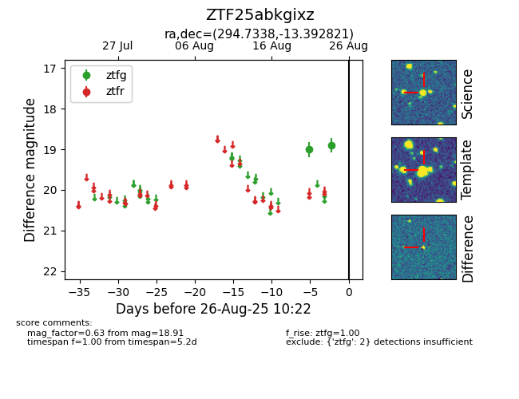

Target ZTF25abkgixz at 2025-08-26 10:22, see:
FINK: fink-portal.org/ZTF25abkgixz
Lasair: lasair-ztf.lsst.ac.uk/objects/ZTF25abkgixz
ALeRCE: alerce.online/object/ZTF25abkgixz
alt names
ZTF25abkgixz (ztf,fink)
coordinates:
equatorial (ra, dec) = (294.7338,-13.39282)
galactic (l, b) = (26.0517,-16.48509)
photometry
last ztfg=18.91
2 ztfg detections
